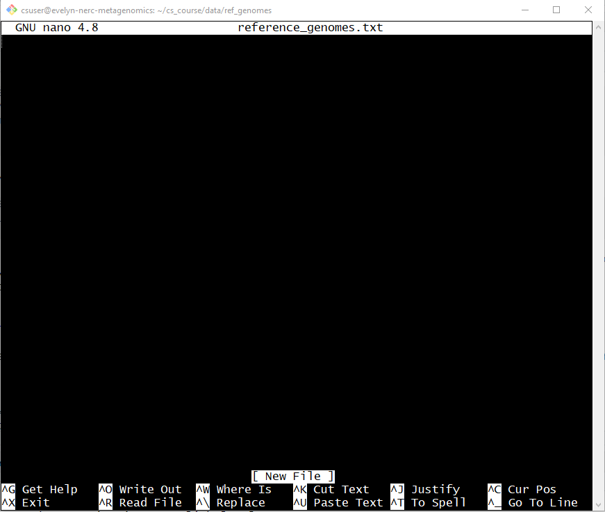
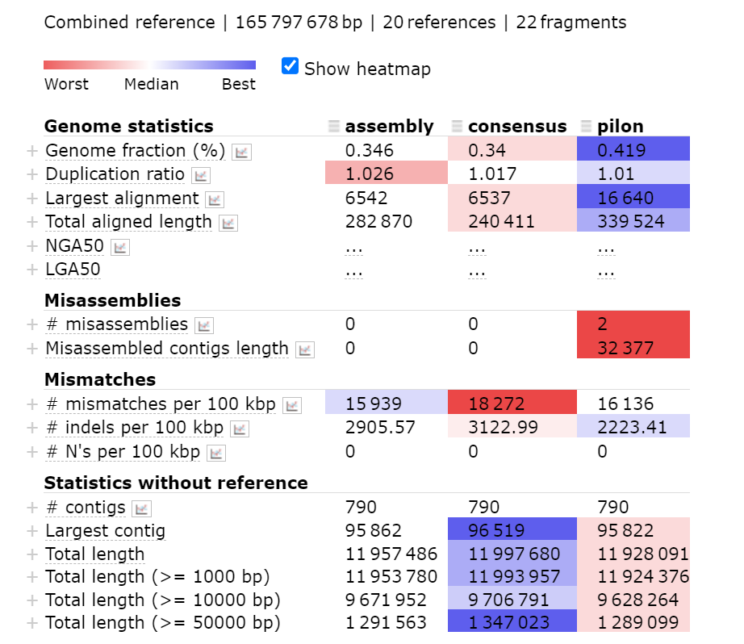

QC polished assembly
Why QC a metagenome assembly?
We now have a polished assembly (pilon.fasta). The next thing to do is to perform quality control (QC) checks to make sure we can be confident in our results and conclusions about the taxonomic, metabolic or functional composition of the communities that we are studying. This also allows us to check whether our efforts to improve the assembly with polishing were successful.
The quality of metagenome assemblies is typically lower than it is for single genome assemblies due to the use of long reads.
In this episode we explain what is meant by assembly quality and how to examine and compare the quality of your metagenome assemblies using seqkit stats and MetaQUAST.
What do we mean by assembly quality?
There are several variables that affect assembly quality. Let’s go over them in more detail.
Contiguity
A high quality assembly is highly contiguous meaning there are long stretches of the genome that have been successfully pieced together. The opposite of contiguous is fragmented.
Contiguity is strongly correlated with both the technology used and the quality of the original DNA used. “Short read”-only assemblies are often very fragmented as it is much more difficult to assemble the short reads into a contiguous assembly. With long reads it is easier to span bits of a genome that are tricky to reassemble, like repeats. However, some preparation methods, such as bead-beating, result in long-reads which are relatively short.
The extent to which contiguity matters depends on your research question. If you need to identify a large structural difference, high contiguity is important.
Degree of duplication
A duplication is when there is more than one copy of a particular region of the genome in the assembly. If a genome is much bigger than expected then there may have been duplication. Removing duplicated regions from assemblies is difficult but is made easier after the process of binning.
Degree of completeness
The more complete an assembly, the higher quality it is. Sometimes there are regions of the assembly that are unexpectedly missing, meaning the metagenome is incomplete.
Chimeric Contigs
Chimeric contigs are when contigs belonging to different genomes get stuck together as one continuous piece. This is caused during assembly, and can be controlled by the parameters used to generate the assembly. While it is difficult to identify chimeras, it is worth considering the parameters we use for the polishing and assembly steps because inappropriate parameters can result in problems such as these.
Low base quality
Low base quality happens when mutations are present in reads that do not reflect actual biological variation. This happens more in long reads due to a higher error rate. However, this is outweighed by the fact that using long reads for metagenome assemblies results in higher overall quality due to higher contiguity. This is why we ‘polished’ our genome in the last episode by comparing the draft assembly to raw short reads.
Using seqkit to generate summary statistics of an assembly
After finishing the draft assembly we used seqkit stats to see some basic statistics about the assembly. We will be using it again to get summary statistics for all three of the assemblies (unpolished, long read polished and short read polished). We can then use those statistics to examine the polishing process.
Let’s review the help documentation for seqkit stats.
Code
seqkit stats --helpsimple statistics of FASTA/Q files
Tips:
1. For lots of small files (especially on SDD), use big value of '-j' to
parallelize counting.
Usage:
seqkit stats [flags]
Aliases:
stats, stat
Flags:
-a, --all all statistics, including quartiles of seq length, sum_gap, N50
-b, --basename only output basename of files
-E, --fq-encoding string fastq quality encoding. available values: 'sanger', 'solexa', 'illumina-1.3+', 'illumina-1.5+', 'illumina-1.8+'. (default "sanger")
-G, --gap-letters string gap letters (default "- .")
-h, --help help for stats
-e, --skip-err skip error, only show warning message
-i, --stdin-label string label for replacing default "-" for stdin (default "-")
-T, --tabular output in machine-friendly tabular format
Global Flags:
--alphabet-guess-seq-length int length of sequence prefix of the first FASTA record based on which seqkit guesses the sequence type (0 for whole seq) (default 10000)
--id-ncbi FASTA head is NCBI-style, e.g. >gi|110645304|ref|NC_002516.2| Pseud...
--id-regexp string regular expression for parsing ID (default "^(\\S+)\\s?")
--infile-list string file of input files list (one file per line), if given, they are appended to files from cli arguments
-w, --line-width int line width when outputting FASTA format (0 for no wrap) (default 60)
-o, --out-file string out file ("-" for stdout, suffix .gz for gzipped out) (default "-")
--quiet be quiet and do not show extra information
-t, --seq-type string sequence type (dna|rna|protein|unlimit|auto) (for auto, it automatically detect by the first sequence) (default "auto")
-j, --threads int number of CPUs. can also set with environment variable SEQKIT_THREADS) (default 4)The N50 length
N50 is a metric indicating the distribution of contig lengths in an assembly. The value of N50 indicates that 50% of the total sequence is in contigs that are that size or larger. For a more thorough introduction to N50, read What’s N50? By The Molecular Ecologist.
It indicates the average size of the contigs the assembly software has produced. A higher N50 length means that more of the assembly is in longer fragments. That means the chunks of sequence produced by the assembler are, on average, larger.
seqkit stats has an option to calculate the N50 length. Use the seqkit stats help documentation to answer the exercise below.
- Using the help documentation, what flag can we add to get the N50 length for this assembly?
- What would the new command be if we added this flag?
Bonus exercise: What flag would enable us to save the output table in a tabular (i.e. tsv) format?
- We can see from the help documentation that the flag
-aor--allwill calculateall statistics, including quartiles of seq length, sum_gap, N50.
- The new command would be
seqkit stats -a results/assembly/assembly.fastaorseqkit stats --all results/assembly/assembly.fasta
Bonus: The flag -T allows us to save it in a tabular output - this makes the table easier to use in other command line programs or programming languages such as R and Python. The command could be either seqkit stats -a -T assembly/assembly.fasta or we can combine the two flags seqkit stats -aT assembly/assembly.fasta
Next, run the command on the original draft assembly (~/cs_course/results/assembly/assembly.fasta) to calculate the N50 length and answer the questions below about the output.
Code
cd ~/cs_course/
seqkit stats -a results/assembly/assembly.fasta- What is the output if we run the new command from the above exercise?
- What is the N50 length of this assembly?
Bonus exercise: Looking at the information available online for Seqkit stats, can you work out what the extra statistics other than N50 tell us?
Output
file format type num_seqs sum_len min_len avg_len max_len Q1 Q2 Q3 sum_gap N50 Q20(%) Q30(%) GC(%)
assembly.fasta FASTA DNA 1,161 18,872,828 528 16,255.7 118,427 7,513 11,854 19,634 0 20,921 0 0 66.26(Your numbers will probably be slightly different to the solution given, as the assembly algorithm runs differently each time. As long as they are in the same ballpark there’s no need to worry!)
- The N50 length for this assembly is 20,921 bp. This tells us that 50% of the assembly is in fragments that are nearly 21,000 bases long or longer!
Bonus: Q1, Q2 and Q3 are the quartile ranges of sequence length. sum_gap is the total number of ambiguous bases (N’s) in the sequence. Q20(%) is the percentage of bases with a PHRED score over 20 and similarly Q30(%) is the percentage of bases with a PHRED score over 30. GC(%) is the guanine-cytosine content of the sequence.
Generating statistics for all three assemblies
Instead of passing just one FASTA file to seqkit stats we can use all three FASTA files at once.
First we need to make sure we’re in the cs_course directory.
Code
cd ~/cs_course/The three files we want to generate statistics for are:
- Draft assembly generated by Flye in
results/assembly/assembly.fasta - Long-read polished assembly generated by Medaka in
results/medaka/consensus.fasta - Short-read polished assembly generated by Pilon in
results/pilon/pilon.fasta
This makes our command:
Code
seqkit stats -a results/assembly/assembly.fasta results/medaka/consensus.fasta results/pilon/pilon.fastaOutput
file format type num_seqs sum_len min_len avg_len max_len Q1 Q2 Q3 sum_gap N50 Q20(%) Q30(%) GC(%)
assembly/assembly.fasta FASTA DNA 791 11,979,728 662 15,145 95,860 7,148 11,019 18,874 0 19,835 0.00 0.00 66.58
medaka/consensus.fasta FASTA DNA 791 12,019,945 662 15,195.9 96,516 7,127.5 10,960 18,914.5 0 19,831 0.00 0.00 65.16
pilon/pilon.fasta FASTA DNA 791 11,950,064 662 15,107.5 95,826 7,108.5 10,902 18,830 0 19,748 0.00 0.00 66.13Using the seqkit output for all three assemblies, compare the statistics for each of the three assemblies. What has changed across the two rounds of polishing? (From assembly>medaka>pilon)
Between the original assembly and the medaka polished assembly:
- Total length, maximum length and average length have all increased. The N50 and GC content have decreased.
Between the medaka polished assembly and the pilon polished assembly:
- All variables have either decreased in length or stayed the same, except the maximum length which is higher (as is GC content by a very small margin).
We can compare these basic assembly statistics in this way. However, these may not tell the full story as there will also have been changes to the overall sequence (e.g. correcting individual base errors).
Using MetaQUAST to further assess assembly quality
We will use MetaQUAST to further evaluate our metagenomic assemblies. MetaQUAST is based on the QUAST genome quality tool but accounts for high species diversity and misassemblies.
MetaQUAST assesses the quality of assemblies using alignments to close references. This means we need to determine which references are appropriate for our data. MetaQUAST can automatically select reference genomes to align the assembly to, but it does not always pick the most appropriate references. Instead we will provide it with a list of references. For now you can just use our list, but next lesson we will show you how we generated it so you know how to do it for your own data in future.
So far we’ve been able to do a lot of work with files that already exist, but now we need to write our own file using the text editor Nano.
Text editors, like Nano, “notepad” on Windows or “TextEdit” on Mac are used to edit any plain text files. Plain text files are those that contain only characters, not images or formatting.
We are using Nano because it is one of the least complex Unix text editors. However, many programmers use Emacs or Vim (both of which require more time to learn), or a graphical editor such as Gedit.
No matter what editor you use, you will need to know where it searches for and saves files. If you start it from the shell, it will (probably) use your current working directory as its default location.
Writing files
First, we need to create a directory to put the reference genomes list in. We’ll put it in a new folder in the data directory, since it’s an input not an output.
Code
cd ~/cs_course/data
mkdir ref_genomes
cd ref_genomesTo open Nano type the command nano followed by the name of the text file we want to generate.
Code
nano reference_genomes.txtWhen you press enter your terminal should change. You will see a white bar at the top with GNU nano 4.8 and some suggested commands at the bottom of the page. There should also be a white box or cursor which indicates where your cursor is. It will look something like this:

The text at the bottom of the screen shows the keyboard shortcuts for performing various tasks in Nano. We will talk more about how to interpret this information soon.
Copy and paste the following list of organism names into this file (don’t forget that Ctrl/Cmd + v won’t work in Linux (Unix). Try Shift+Insert instead, or right click and select paste from the drop-down menu - see the note below).
Code
Bradyrhizobium erythrophlei
Bradyrhizobium lablabi
Bradyrhizobium canariense
Bradyrhizobium sp. 200
Bradyrhizobium sp. 170
Bradyrhizobium diazoefficiens
Bradyrhizobium sp. 186
Rhodopseudomonas palustris
Afipia sp. GAS231
Bradyrhizobium arachidis
Bradyrhizobium icense
Bradyrhizobium sp. CCBAU 051011
Rhodoplanes sp. Z2-YC6860
Bradyrhizobium sp. S2-20-1
Bradyrhizobium sp. S2-11-2
Bradyrhizobium sp. CCBAU 51753
Bradyrhizobium genosp. L
Bradyrhizobium paxllaeri
Frigoriglobus tundricola
Bradyrhizobium sp. A19Once we’re happy with our text, we can press Ctrl-o (press the Ctrl or Control key and, while holding it down, press the o key) to write our data to disk. You will then be prompted with File Name to Write: reference_genomes.txt at the bottom of the screen. Pressing Enter will confirm and save your changes. Once the file is saved, we can use Ctrl-x to quit the nano editor and return to the shell.
The Control key is also called the “Ctrl” key. There are various ways in which using the Control key may be described. For example, you may see an instruction to press the Ctrl key and, while holding it down, press the X key, described as any of:
Control-XControl+XCtrl-XCtrl+X^XC-x
In nano, along the bottom of the screen you’ll see ^G Get Help ^O WriteOut. This means that you can use Ctrl-G to get help and Ctrl-O to save your file.
If you are using a Mac, you might be more familiar with the Command key, which is labelled with a ⌘ . But you will often use the the Ctrl key when working in a Terminal. :
Most people will want to use Ctrl+C and Ctrl+V to copy and paste. However in GitBash these shortcuts have other functions. Ctrl+C interrupts the currently running command and Ctrl+V tells the terminal to treat every keystroke as a literal character, so will add shortcuts like Ctrl+C as characters. Instead you can copy and paste using the mouse:
- Left click and drag to highlight text, then right click to copy. Move the cursor to where you want to paste and right click to paste.
You should then be able to see this file when you ls and view it using less.
Code
ls
less reference_genomes.txtOutput
reference_genomes.txtOutput
Bradyrhizobium erythrophlei
Bradyrhizobium lablabi
Bradyrhizobium canariense
Bradyrhizobium sp. 200
Bradyrhizobium sp. 170
Bradyrhizobium diazoefficiens
Bradyrhizobium sp. 186
Rhodopseudomonas palustris
Afipia sp. GAS231
Bradyrhizobium arachidis
Bradyrhizobium icense
Bradyrhizobium sp. CCBAU 051011
Rhodoplanes sp. Z2-YC6860
Bradyrhizobium sp. S2-20-1
Bradyrhizobium sp. S2-11-2
Bradyrhizobium sp. CCBAU 51753
Bradyrhizobium genosp. L
Bradyrhizobium paxllaeri
Frigoriglobus tundricola
Bradyrhizobium sp. A19
(END)Running MetaQUAST
Once we have our list of reference genomes we can run MetaQUAST on the original assembly and the two polished assemblies.
First we should make a directory in results where we’ll store the MetaQUAST output.
Code
cd ~/cs_course
mkdir results/metaquastNext let’s look at the help documentation to work out which commands are right for us.
Code
metaquast.py -hMetaQUAST: Quality Assessment Tool for Metagenome Assemblies
Version: 5.2.0
Usage: python metaquast.py [options] <files_with_contigs>
Options:
-o --output-dir <dirname> Directory to store all result files [default: quast_results/results_<datetime>]
-r <filename,filename,...> Comma-separated list of reference genomes or directory with reference genomes
--references-list <filename> Text file with list of reference genome names for downloading from NCBI
-g --features [type:]<filename> File with genomic feature coordinates in the references (GFF, BED, NCBI or TXT)
Optional 'type' can be specified for extracting only a specific feature type from GFF
-m --min-contig <int> Lower threshold for contig length [default: 500]
-t --threads <int> Maximum number of threads [default: 25% of CPUs]
Advanced options:
-s --split-scaffolds Split assemblies by continuous fragments of N's and add such "contigs" to the comparison
-l --labels "label, label, ..." Names of assemblies to use in reports, comma-separated. If contain spaces, use quotes
-L Take assembly names from their parent directory names
-e --eukaryote Genome is eukaryotic (primarily affects gene prediction)
--fungus Genome is fungal (primarily affects gene prediction)
--large Use optimal parameters for evaluation of large genomes
In particular, imposes '-e -m 3000 -i 500 -x 7000' (can be overridden manually)
-k --k-mer-stats Compute k-mer-based quality metrics (recommended for large genomes)
This may significantly increase memory and time consumption on large genomes
--k-mer-size Size of k used in --k-mer-stats [default: 101]
--circos Draw Circos plot
-f --gene-finding Predict genes using MetaGeneMark
--glimmer Use GlimmerHMM for gene prediction (instead of the default finder, see above)
--gene-thresholds <int,int,...> Comma-separated list of threshold lengths of genes to search with Gene Finding module
[default: 0,300,1500,3000]
--rna-finding Predict ribosomal RNA genes using Barrnap
-b --conserved-genes-finding Count conserved orthologs using BUSCO (only on Linux)
--operons <filename> File with operon coordinates in the reference (GFF, BED, NCBI or TXT)
--max-ref-number <int> Maximum number of references (per each assembly) to download after looking in SILVA database.
Set 0 for not looking in SILVA at all [default: 50]
--blast-db <filename> Custom BLAST database (.nsq file). By default, MetaQUAST searches references in SILVA database
--use-input-ref-order Use provided order of references in MetaQUAST summary plots (default order: by the best average value)
--contig-thresholds <int,int,...> Comma-separated list of contig length thresholds [default: 0,1000,5000,10000,25000,50000]
--x-for-Nx <int> Value of 'x' for Nx, Lx, etc metrics reported in addition to N50, L50, etc (0, 100) [default: 90]
--reuse-combined-alignments Reuse the alignments from the combined_reference stage on runs_per_reference stages.
-u --use-all-alignments Compute genome fraction, # genes, # operons in QUAST v1.* style.
By default, QUAST filters Minimap's alignments to keep only best ones
-i --min-alignment <int> The minimum alignment length [default: 65]
--min-identity <float> The minimum alignment identity (80.0, 100.0) [default: 90.0]
-a --ambiguity-usage <none|one|all> Use none, one, or all alignments of a contig when all of them
are almost equally good (see --ambiguity-score) [default: one]
--ambiguity-score <float> Score S for defining equally good alignments of a single contig. All alignments are sorted
by decreasing LEN * IDY% value. All alignments with LEN * IDY% < S * best(LEN * IDY%) are
discarded. S should be between 0.8 and 1.0 [default: 0.99]
--unique-mapping Disable --ambiguity-usage=all for the combined reference run,
i.e. use user-specified or default ('one') value of --ambiguity-usage
--strict-NA Break contigs in any misassembly event when compute NAx and NGAx.
By default, QUAST breaks contigs only by extensive misassemblies (not local ones)
-x --extensive-mis-size <int> Lower threshold for extensive misassembly size. All relocations with inconsistency
less than extensive-mis-size are counted as local misassemblies [default: 1000]
--local-mis-size <int> Lower threshold on local misassembly size. Local misassemblies with inconsistency
less than local-mis-size are counted as (long) indels [default: 200]
--scaffold-gap-max-size <int> Max allowed scaffold gap length difference. All relocations with inconsistency
less than scaffold-gap-size are counted as scaffold gap misassemblies [default: 10000]
--unaligned-part-size <int> Lower threshold for detecting partially unaligned contigs. Such contig should have
at least one unaligned fragment >= the threshold [default: 500]
--skip-unaligned-mis-contigs Do not distinguish contigs with >= 50% unaligned bases as a separate group
By default, QUAST does not count misassemblies in them
--fragmented Reference genome may be fragmented into small pieces (e.g. scaffolded reference)
--fragmented-max-indent <int> Mark translocation as fake if both alignments are located no further than N bases
from the ends of the reference fragments [default: 200]
Requires --fragmented option
--upper-bound-assembly Simulate upper bound assembly based on the reference genome and reads
--upper-bound-min-con <int> Minimal number of 'connecting reads' needed for joining upper bound contigs into a scaffold
[default: 2 for mate-pairs and 1 for long reads]
--est-insert-size <int> Use provided insert size in upper bound assembly simulation [default: auto detect from reads or 255]
--report-all-metrics Keep all quality metrics in the main report even if their values are '-' for all assemblies or
if they are not applicable (e.g., reference-based metrics in the no-reference mode)
--plots-format <str> Save plots in specified format [default: pdf].
Supported formats: emf, eps, pdf, png, ps, raw, rgba, svg, svgz
--memory-efficient Run everything using one thread, separately per each assembly.
This may significantly reduce memory consumption on large genomes
--space-efficient Create only reports and plots files. Aux files including .stdout, .stderr, .coords will not be created.
This may significantly reduce space consumption on large genomes. Icarus viewers also will not be built
-1 --pe1 <filename> File with forward paired-end reads (in FASTQ format, may be gzipped)
-2 --pe2 <filename> File with reverse paired-end reads (in FASTQ format, may be gzipped)
--pe12 <filename> File with interlaced forward and reverse paired-end reads. (in FASTQ format, may be gzipped)
--mp1 <filename> File with forward mate-pair reads (in FASTQ format, may be gzipped)
--mp2 <filename> File with reverse mate-pair reads (in FASTQ format, may be gzipped)
--mp12 <filename> File with interlaced forward and reverse mate-pair reads (in FASTQ format, may be gzipped)
--single <filename> File with unpaired short reads (in FASTQ format, may be gzipped)
--pacbio <filename> File with PacBio reads (in FASTQ format, may be gzipped)
--nanopore <filename> File with Oxford Nanopore reads (in FASTQ format, may be gzipped)
--ref-sam <filename> SAM alignment file obtained by aligning reads to reference genome file
--ref-bam <filename> BAM alignment file obtained by aligning reads to reference genome file
--sam <filename,filename,...> Comma-separated list of SAM alignment files obtained by aligning reads to assemblies
(use the same order as for files with contigs)
--bam <filename,filename,...> Comma-separated list of BAM alignment files obtained by aligning reads to assemblies
(use the same order as for files with contigs)
Reads (or SAM/BAM file) are used for structural variation detection and
coverage histogram building in Icarus
--sv-bedpe <filename> File with structural variations (in BEDPE format)
Speedup options:
--no-check Do not check and correct input fasta files. Use at your own risk (see manual)
--no-plots Do not draw plots
--no-html Do not build html reports and Icarus viewers
--no-icarus Do not build Icarus viewers
--no-snps Do not report SNPs (may significantly reduce memory consumption on large genomes)
--no-gc Do not compute GC% and GC-distribution
--no-sv Do not run structural variation detection (make sense only if reads are specified)
--no-read-stats Do not align reads to assemblies
Reads will be aligned to reference and used for coverage analysis,
upper bound assembly simulation, and structural variation detection.
Use this option if you do not need read statistics for assemblies.
--fast A combination of all speedup options except --no-check
Other:
--silent Do not print detailed information about each step to stdout (log file is not affected)
--test Run MetaQUAST on the data from the test_data folder, output to quast_test_output
--test-no-ref Run MetaQUAST without references on the data from the test_data folder, output to quast_test_output.
MetaQUAST will download SILVA 16S rRNA database (~170 Mb) for searching reference genomes
Internet connection is required
-h --help Print full usage message
-v --version Print version
Online QUAST manual is available at http://quast.sf.net/manualThe documentation gives the usage as python metaquast.py [options] <files_with_contigs>.
- We can disregard the
pythonportion of this
The main “option” we want to include is --references-list, which supplies a text file containing our list of reference genomes (this is the file we just made).
The <files_with_contigs> part just means that this is where we put the assemblies to be evaluated. We’ll list them all one after the other so we can compare their outputs easily. We’ll also use the --output or -o flag to specify where the output should be stored.
Our command therefore looks like:
Code
metaquast.py --references-list data/ref_genomes/reference_genomes.txt results/assembly/assembly.fasta results/medaka/consensus.fasta results/pilon/pilon.fasta --output results/metaquast &> results/metaquast/metaquast.out &Note that once again we are running the command in the background using the & symbol and redirecting the output to a file (metaquast.out) using >. This is because it takes around 8-10 minutes to run.
If you open up metaquast.out after running the command you should see something like this as MetaQUAST starts downloading the reference species we specified in our files:
Code
cd results/metaquast
less metaquast.outOutput
Version: 5.2.0
System information:
OS: Linux-5.4.0-131-generic-x86_64-with-glibc2.31 (linux_64)
Python version: 3.9.7
CPUs number: 8
Started: 2023-03-16 16:32:09
Logging to /home/csuser/cs_course/results/metaquast/quast_results/results_YYYY_MM_DD_HH_MM_SS/metaquast.log
NOTICE: Maximum number of threads is set to 2 (use --threads option to set it manually)
Contigs:
Pre-processing...
1 results/assembly/assembly.fasta ==> assembly
2 results/medaka/consensus.fasta==> consensus
3 results/pilon/pilon.fasta ==> pilon
List of references was provided, starting to download reference genomes from NCBI...
2023-03-16 16:32:11
2023-03-16 16:32:11
Trying to download found references from NCBI. Totally 20 organisms to try.
Bradyrhizobium_erythrophlei | successfully downloaded (total 1, 19 more to go)
Bradyrhizobium_lablabi | successfully downloaded (total 2, 18 more to go)
Bradyrhizobium_canariense | successfully downloaded (total 3, 17 more to go)
Bradyrhizobium_sp._200 | successfully downloaded (total 4, 16 more to go)
Bradyrhizobium_sp._170 | successfully downloaded (total 5, 15 more to go)
Bradyrhizobium_diazoefficiens | successfully downloaded (total 6, 14 more to go)
Bradyrhizobium_sp._186 | successfully downloaded (total 7, 13 more to go)
Rhodopseudomonas_palustris | successfully downloaded (total 8, 12 more to go)
Afipia_sp._GAS231 | successfully downloaded (total 9, 11 more to go)
Bradyrhizobium_arachidis | successfully downloaded (total 10, 10 more to go)
Bradyrhizobium_icense | successfully downloaded (total 11, 9 more to go)
Bradyrhizobium_sp._CCBAU_051011 | successfully downloaded (total 12, 8 more to go)
Rhodoplanes_sp._Z2-YC6860 | successfully downloaded (total 13, 7 more to go)
Bradyrhizobium_sp._S2-20-1 | successfully downloaded (total 14, 6 more to go)
Bradyrhizobium_sp._S2-11-2 | successfully downloaded (total 15, 5 more to go)
Bradyrhizobium_sp._CCBAU_51753 | successfully downloaded (total 16, 4 more to go)
Bradyrhizobium_genosp._L | successfully downloaded (total 17, 3 more to go)
Bradyrhizobium_paxllaeri | successfully downloaded (total 18, 2 more to go)
Frigoriglobus_tundricola | successfully downloaded (total 19, 1 more to go)
Bradyrhizobium_sp._A19 | successfully downloaded (total 20, 0 more to go)Once MetaQUAST has finished you should see an output like:
Output
[2]+ Done metaquast.py --references-list data/ref_genomes/reference_genomes.txt results/assembly/assembly.fasta results/medaka/consensus.fasta results/pilon/pilon.fasta --output results/metaquast &> results/metaquast/metaquast.out & You can also look in your metaquast.out and jump to the end using Shift+g.
Output
MetaQUAST finished.
Log is saved to /home/csuser/cs_course/results/metaquast/metaquast.log
Finished: 2023-03-16 13:12:43
Elapsed time: 0:10:51.624140
Total NOTICEs: 45; WARNINGs: 0; non-fatal ERRORs: 0
Thank you for using QUAST!We can now navigate into the metaquast directory to see our output files.
Code
cd results/metaquast
lsOutut
combined_reference icarus_viewers metaquast.out quast_downloaded_references runs_per_reference
icarus.html metaquast.log not_aligned report.html summaryWe can see that MetaQUAST has generated multiple different files.
If you want to explore all the files you can download this whole directory using scp, with -r flag to download all directories and what they contain. This will require ~500MB of space.
However, most of this information is in the report.html file so we can download just that one instead. As this is a HTML file we will first need to download it to our local computer in order to open it.
Downloading MetaQUAST report.html
Code
scp -i login-key-instanceNNN.pem csuser@instanceNNN.cloud-span.aws.york.ac.uk:~/cs_course/results/metaquast/report.html .Make sure you replace both the NNNs with your instance number. The results.html file relies on some of the other files generated by MetaQUAST so with only the one file you won’t have full functionality but we can still view the information we want.
If you haven’t managed to download the file you can view our example report here.
You should take a few minutes to explore the file before answering the following exercise.

Understanding MetaQUAST output
The output is organised into several sections, with a column for each assembly. The worst scoring column is shown in red, the best in blue.
Genome statistics
This section determines the quality of the assembly based on the size of the total assembly. The duplication ratio is the amount of the total assembly that is represented more than once. The more fragmented the assembly, the higher this value will be. See What makes an assembly bad section above to see further details.
Misassemblies
Missassemblies are when pieces in an assembly are overlapped in the incorrect way. In the MetaQUAST manual, they define missassemblies in the four following ways (taken from the manual):
Misassemblies is the number of positions in the contigs (breakpoints) that satisfy one of the following criteria.
- the left flanking sequence aligns over 1 kbp away from the right flanking sequence on the reference;
- flanking sequences overlap on more than 1 kbp;
- flanking sequences align to different strands or different chromosomes;
- flanking sequences align on different reference genomes (MetaQUAST only)
These can be caused by errors in the assembly, or they can be caused by structural variation in the sample, such as inversions, relocations and translocation.
Mismatches
This is where there are incorrect bases in the contigs making up the assembly. The summary gives you the total number of mismatches per 100kbp of sequence and short insertions and deletions (indels) per 100kbp.
Statistics without reference
The statistics without a reference are based on the full assembly rather than comparing the assembly to the species that you have asked it to compare to. The largest contig is an indicator of how good the overall assembly is. If the largest contig is small, it means that the rest of the assembly is of a poor quality.
There is a detailed description of each of the outputs in the MetaQUAST manual which you can use to understand the output more fully.
Using the above image how has the iterative polishing from assembly > consensus > pilon improved the assembly?
In all three assemblies there is a low duplication ratio and this decreases with each round of polishing. Completeness of the assembly increases with polishing, as does largest alignment. In these areas polishing has improved the assembly. However, the number of mismatches and misassemblies increased with polishing and the size of the largest contig decreased. These conflicting statistics illustrate the difficulty in assessing the quality of an assembly.